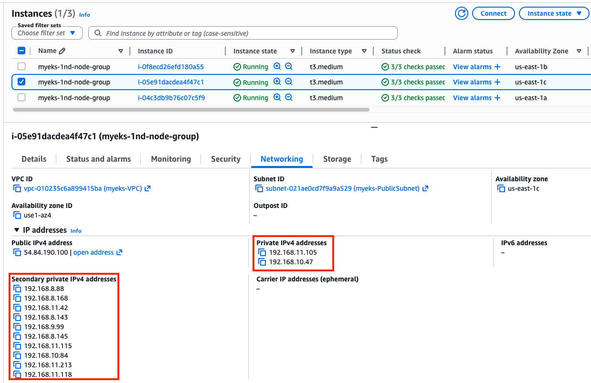
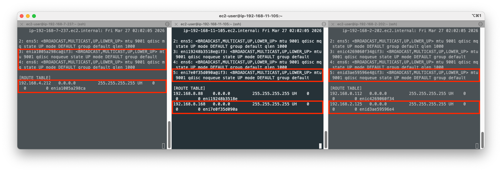
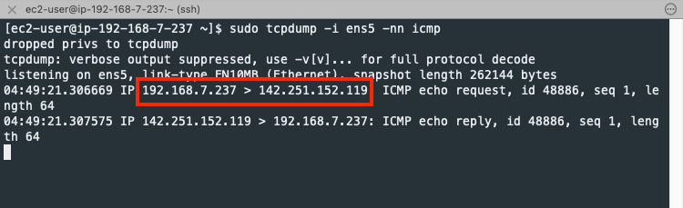

Lab 1: Routing and Interfaces
1. Cluster Provisioning
Get terraform resources:
Set terraform variables:
export TF_VAR_KeyName=$(aws ec2 describe-key-pairs --query "KeyPairs[].KeyName" --output text)
export TF_VAR_ssh_access_cidr=$(curl -s ipinfo.io/ip)/32
echo $TF_VAR_KeyName $TF_VAR_ssh_access_cidr
Deploy EKS. Takes about 12 mins.
terraform init
terraform plan
nohup sh -c "terraform apply -auto-approve" > create.log 2>&1 &
tail -f create.log
Confirm your credentials used to provision the EKS cluster and switch kubectl context to your cluster:
terraform output -raw configure_kubectl
# aws eks update-kubeconfig --region us-east-1 --name myeks
aws eks --region us-east-1 update-kubeconfig --name myeks
kubectl config rename-context $(cat ~/.kube/config | grep current-context | awk '{print $2}') myeks
2. Browse Cluster Default Setting
2.1. Checklist in console
- Overview: API server endpoint, OpenID Connect provider URL
- Compute: Node groups ->
myeks-1nd-node-group-> Kubernetes labes ->{tier: primary}(defined here) - Networking: Service IPv4 range(
10.100.0.0/16), Subnets - Add-ons:
CoreDNS,Amazon VPC CNI,kube-proxy(all defined here) - Access: IAM access entries
2.2. Cluster Info
Browse cluster info:
Browse node info:
kubectl get node --label-columns=node.kubernetes.io/instance-type,eks.amazonaws.com/capacityType,topology.kubernetes.io/zone
kubectl get node -v=6
# get node by label
kubectl get node --show-labels
kubectl get node -l tier=primary
Browse pod info:
kubectl get pod -A
kubectl get pdb -n kube-system
# NAME MIN AVAILABLE MAX UNAVAILABLE ALLOWED DISRUPTIONS AGE
# coredns N/A 1 1 25h
Check node group:
Browse addons:
aws eks list-addons --cluster-name myeks | jq
eksctl get addon --cluster myeks
# NAME VERSION STATUS ISSUES IAMROLE UPDATE AVAILABLE CONFIGURATION VALUES NAMESPACE POD IDENTITY ASSOCIATION ROLES
# coredns v1.13.2-eksbuild.3 ACTIVE 0 kube-system
# kube-proxy v1.34.5-eksbuild.2 ACTIVE 0 kube-system
# vpc-cni v1.21.1-eksbuild.5 ACTIVE 0 {"env":{"WARM_ENI_TARGET":"1"}} kube-system
3. AWS VPC CNI
Please refer to 2.3.3. Cloud Native (AWS VPC CNI) section to understand AWS VPC CNI.
3.1. Browse CNI associated files in a worker node
cat /etc/cni/net.d/10-aws.conflist | jq
# {
# "cniVersion": "0.4.0",
# "name": "aws-cni",
# "disableCheck": true,
# "plugins": [
# {
# "name": "aws-cni",
# "type": "aws-cni",
# "vethPrefix": "eni",
# "mtu": "9001",
# "podSGEnforcingMode": "strict",
# "pluginLogFile": "/var/log/aws-routed-eni/plugin.log",
# "pluginLogLevel": "DEBUG",
# "capabilities": {
# "io.kubernetes.cri.pod-annotations": true
# }
# },
# {
# "name": "egress-cni",
# "type": "egress-cni",
# "mtu": "9001",
# "enabled": "false",
# "randomizeSNAT": "prng",
# "nodeIP": "",
# "ipam": {
# "type": "host-local",
# "ranges": [
# [
# {
# "subnet": "fd00::ac:00/118"
# }
# ]
# ],
# "routes": [
# {
# "dst": "::/0"
# }
# ],
# "dataDir": "/run/cni/v4pd/egress-v6-ipam"
# },
# "pluginLogFile": "/var/log/aws-routed-eni/egress-v6-plugin.log",
# "pluginLogLevel": "DEBUG"
# },
# {
# "type": "portmap",
# "capabilities": {
# "portMappings": true
# },
# "snat": true
# }
# ]
# }
tree /opt/cni/bin
# /opt/cni/bin
# ├── LICENSE
# ├── aws-cni
# ├── aws-cni-support.sh
# ├── bandwidth
# ├── bridge
# ├── dhcp
# ├── dummy
# ├── egress-cni
# ├── firewall
# ├── host-device
# ├── host-local
# ├── ipvlan
# ├── loopback
# ├── macvlan
# ├── portmap
# ├── ptp
# ├── sbr
# ├── static
# ├── tap
# ├── tuning
# ├── vlan
# └── vrf
3.2. Secondary IP mode overview
As mentioned in 2.3.3. Cloud Native (AWS VPC CNI), Secondary IP mode is the default mode for AWS VPC CNI. It is deployed as a DaemonSet named aws-node. The following is the IP address allocation process conducted by CNI:
- When a worker node is provisioned, a primary ENI is attached to the node.
- The CNI allocates a warm pool of ENIs and secondary IP addresses from the subnet attached to the node's primary ENI.
- By default,
ipamdattempts to allocate an additional ENI to the node.ipamdallocates this extra ENI as soon as a single Pod is scheduled and assigned a secondary IP address from the primary ENI. This warm ENI enables faster Pod networking. - When the pool of secondary IP addresses is exhausted, the CNI adds another ENI to allocate more.
The number of ENIs and IP addresses in the pool is configured through environment variables called WARM_ENI_TARGET, WARM_IP_TARGET, MINIMUM_IP_TARGET. Here's what each variable does:
WARM_ENI_TARGET: Specifies the number of entire ENIs to keep in the "warm" pool. For example, if set to 1, the CNI will always attempt to have at least one extra ENI (and all its available secondary IPs) pre-attached and ready for new Pods.WARM_IP_TARGET: Specifies the number of individual secondary IP addresses to keep in the "warm" pool. It provides finer control than ENI targets, ensuring that a specific number of free IPs are always available across any attached ENIs.MINIMUM_IP_TARGET: Specifies the minimum total number of secondary IP addresses that must be present on the node at all times, regardless of how many Pods are currently running.
| Item | WARM_ENI_TARGET | WARM_IP_TARGET | MINIMUM_IP_TARGET |
|---|---|---|---|
| Control Unit | ENI | IP | IP |
| Usage | Simple / Aggressive | Fine-grained control | Initial allocation |
| Recommendation | ❌ (Set to 0 to disable) | ✅ | ✅ |
| Scaling Response | Very Fast | Fast | Fast only initially |
| Resource Efficiency | Low | High | Medium |
WARM_ENI_TARGET is set to 1:
eksctl get addon --name vpc-cni --cluster myeks
# NAME VERSION STATUS ISSUES IAMROLE UPDATE AVAILABLE CONFIGURATION VALUES NAMESPACE POD IDENTITY ASSOCIATION ROLES
# vpc-cni v1.21.1-eksbuild.5 ACTIVE 0 {"env":{"WARM_ENI_TARGET":"1"}} kube-system
kubectl get daemonset aws-node --show-managed-fields -n kube-system -o yaml
# - name: ENABLE_SUBNET_DISCOVERY
# value: "true"
# - name: NETWORK_POLICY_ENFORCING_MODE
# value: standard
# - name: VPC_CNI_VERSION
# value: v1.21.1
# - name: VPC_ID
# value: vpc-010235c6a899415ba
# - name: WARM_ENI_TARGET
# value: "1"
# - name: WARM_PREFIX_TARGET
# value: "1"
Five secondary IP addresses per ENI are allocated in a warm pool. This matches the behavior where WARM_ENI_TARGET=1 ensures that at least one extra "warm" ENI is always available with its full capacity of secondary IPs pre-allocated to the node's pool, reducing the latency when a new Pod needs an IP.
{kind=link}
4. Networking Configuration on a Worker Node
4.1. Variable setting
EC2 ENI IP addresses:
aws ec2 describe-instances --query "Reservations[*].Instances[*].{PublicIPAdd:PublicIpAddress,PrivateIPAdd:PrivateIpAddress,InstanceName:Tags[?Key=='Name']|[0].Value,Status:State.Name}" --filters Name=instance-state-name,Values=running --output table
------------------------------------------------------------------------
| DescribeInstances |
+-----------------------+------------------+----------------+----------+
| InstanceName | PrivateIPAdd | PublicIPAdd | Status |
+-----------------------+------------------+----------------+----------+
| myeks-1nd-node-group | 192.168.7.237 | 54.204.76.91 | running |
| myeks-1nd-node-group | 192.168.11.105 | 54.84.190.100 | running |
| myeks-1nd-node-group | 192.168.2.202 | 44.201.60.214 | running |
+-----------------------+------------------+----------------+----------+
Set variables:
ssh into worker nodes:
for i in $N1 $N2 $N3; do echo ">> node $i <<"; ssh -o StrictHostKeyChecking=no ec2-user@$i hostname; echo; done
4.2. Browse networking configurations
Browse aws-node DaemonSet:
kubectl get daemonset aws-node --namespace kube-system -owide
kubectl get ds aws-node -n kube-system -o json | jq '.spec.template.spec.containers[0].env'
kube-proxy config:
kubectl describe cm -n kube-system kube-proxy-config
# mode: "iptables"
kubectl describe cm -n kube-system kube-proxy-config | grep iptables: -A5
# iptables:
# masqueradeAll: false
# masqueradeBit: 14
# minSyncPeriod: 0s
# syncPeriod: 30s
# ipvs:
Check IPs:
# Node IPs
aws ec2 describe-instances --query "Reservations[*].Instances[*].{PublicIPAdd:PublicIpAddress,PrivateIPAdd:PrivateIpAddress,InstanceName:Tags[?Key=='Name']|[0].Value,Status:State.Name}" --filters Name=instance-state-name,Values=running --output table
# Pod IPs
kubectl get pod -n kube-system -o=custom-columns=NAME:.metadata.name,IP:.status.podIP,STATUS:.status.phase
Browse CNI associated logs with the following commands:
# /var/log/aws-routed-eni contains log files
for i in $N1 $N2 $N3; do echo ">> node $i <<"; ssh ec2-user@$i tree /var/log/aws-routed-eni ; echo; done
# plugin.log and ipamd.log collects logs about IP address allocation activities
for i in $N1 $N2 $N3; do echo ">> node $i <<"; ssh ec2-user@$i sudo cat /var/log/aws-routed-eni/plugin.log | jq ; echo; done
for i in $N1 $N2 $N3; do echo ">> node $i <<"; ssh ec2-user@$i sudo cat /var/log/aws-routed-eni/ipamd.log | jq ; echo; done
{
"level": "debug",
"ts": "2026-03-25T09:23:46.634Z",
"caller": "ipamd/ipamd.go:1669",
"msg": "IP pool stats for network card 0: Total IPs/Prefixes = 10/0, AssignedIPs/CooldownIPs: 1/0, c.maxIPsPerENI = 5"
}
Browse Network interface on each node.
for i in $N1 $N2 $N3; do echo ">> node $i <<"; ssh ec2-user@$i sudo ip -br -c addr; echo; done
>> node 54.204.76.91 <<
lo UNKNOWN 127.0.0.1/8 ::1/128
ens5 UP 192.168.7.237/22 metric 512 fe80::10dc:96ff:fe8a:51c7/64
>> node 54.84.190.100 <<
lo UNKNOWN 127.0.0.1/8 ::1/128
ens5 UP 192.168.11.105/22 metric 512 fe80::8ff:fdff:fe95:3205/64
eni19248b3518e@if3 UP fe80::c055:29ff:fe4a:bf70/64
ens6 UP 192.168.10.47/22 fe80::8ff:c2ff:fec6:ec69/64
>> node 44.201.60.214 <<
lo UNKNOWN 127.0.0.1/8 ::1/128
ens5 UP 192.168.2.202/22 metric 512 fe80::3b:7aff:fe60:26af/64
enic4269060f34@if3 UP fe80::7c29:9cff:feab:7a89/64
ens6 UP 192.168.0.137/22 fe80::c4:b6ff:feaf:5339/64
kubectl get pod -n kube-system -l k8s-app=kube-dns -owide
NAME READY STATUS RESTARTS AGE IP NODE NOMINATED NODE READINESS GATES
coredns-6d58b7d47c-m5mq4 1/1 Running 0 41h 192.168.8.88 ip-192-168-11-105.ec2.internal <none> <none>
coredns-6d58b7d47c-njdm8 1/1 Running 0 41h 192.168.0.112 ip-192-168-2-202.ec2.internal <none> <none>
k get po -A -owide
NAMESPACE NAME READY STATUS RESTARTS AGE IP NODE NOMINATED NODE READINESS GATES
kube-system aws-node-4m5rm 2/2 Running 0 42h 192.168.2.202 ip-192-168-2-202.ec2.internal <none> <none>
kube-system aws-node-rk8rf 2/2 Running 0 42h 192.168.7.237 ip-192-168-7-237.ec2.internal <none> <none>
kube-system aws-node-w69rz 2/2 Running 0 42h 192.168.11.105 ip-192-168-11-105.ec2.internal <none> <none>
kube-system coredns-6d58b7d47c-m5mq4 1/1 Running 0 42h 192.168.8.88 ip-192-168-11-105.ec2.internal <none> <none>
kube-system coredns-6d58b7d47c-njdm8 1/1 Running 0 42h 192.168.0.112 ip-192-168-2-202.ec2.internal <none> <none>
kube-system kube-proxy-5qmhn 1/1 Running 0 42h 192.168.2.202 ip-192-168-2-202.ec2.internal <none> <none>
kube-system kube-proxy-kfh4m 1/1 Running 0 42h 192.168.7.237 ip-192-168-7-237.ec2.internal <none> <none>
kube-system kube-proxy-q998k 1/1 Running 0 42h 192.168.11.105 ip-192-168-11-105.ec2.internal <none> <none>
kubectl get pods tells you only core-dns pods got assigned a new IP address and are running in nodes with multiple ENIs. Other pods such as aws-node and kube-proxy are configured with hostNetwork: true and thus using the node IP address. Why is that so?
aws-node(VPC CNI): It needs to manage the node's Elastic Network Interfaces (ENIs) and assign secondary IPs to other pods. It cannot do this from an isolated network namespace. It needs direct access to the host's hardware and network stack.kube-proxy: It managesiptablesorIPVSrules directly in the host's Linux kernel to route Service traffic. To modify the host's kernel networking rules, it must run in the host's network namespace. CoreDNS is a standard application (a DNS server) that doesn't need to modify the underlying host's networking stack.
{kind=link}
Check routes on each node:
for i in $N1 $N2 $N3; do echo ">> node $i <<"; ssh ec2-user@$i sudo ip -c route; echo; done
>> node 54.204.76.91 <<
default via 192.168.4.1 dev ens5 proto dhcp src 192.168.7.237 metric 512
192.168.0.2 via 192.168.4.1 dev ens5 proto dhcp src 192.168.7.237 metric 512
192.168.4.0/22 dev ens5 proto kernel scope link src 192.168.7.237 metric 512
192.168.4.1 dev ens5 proto dhcp scope link src 192.168.7.237 metric 512
>> node 54.84.190.100 <<
default via 192.168.8.1 dev ens5 proto dhcp src 192.168.11.105 metric 512
192.168.0.2 via 192.168.8.1 dev ens5 proto dhcp src 192.168.11.105 metric 512
192.168.8.0/22 dev ens5 proto kernel scope link src 192.168.11.105 metric 512
192.168.8.1 dev ens5 proto dhcp scope link src 192.168.11.105 metric 512
192.168.8.88 dev eni19248b3518e scope link
>> node 44.201.60.214 <<
default via 192.168.0.1 dev ens5 proto dhcp src 192.168.2.202 metric 512
192.168.0.0/22 dev ens5 proto kernel scope link src 192.168.2.202 metric 512
192.168.0.1 dev ens5 proto dhcp scope link src 192.168.2.202 metric 512
192.168.0.2 dev ens5 proto dhcp scope link src 192.168.2.202 metric 512
192.168.0.112 dev enic4269060f34 scope link
IpamD debugging command to list up assigned ENIs and IPs per node:
for i in $N1 $N2 $N3; do echo ">> node $i <<"; ssh ec2-user@$i curl -s http://localhost:61679/v1/enis | jq; echo; done
4.3. Lab - Network Multipool Deployment
4.3.1. Leb Setup
Open your terminal on each node and print the route table:
ssh ec2-user@$N1
watch -d "ip link | egrep 'ens|eni' ;echo;echo "[ROUTE TABLE]"; route -n | grep eni"
ssh ec2-user@$N2
watch -d "ip link | egrep 'ens|eni' ;echo;echo "[ROUTE TABLE]"; route -n | grep eni"
ssh ec2-user@$N3
watch -d "ip link | egrep 'ens|eni' ;echo;echo "[ROUTE TABLE]"; route -n | grep eni"
{kind=link}
Note that 192.168.8.88 is the IP for coredns pod in the second node and 192.168.0.112 is the IP for coredns pod in the third node.
The route entry on the second node is a Host(Node) Route used by kernel to direct traffic to the coredns pod. Here is the breakdown of what each part means:
192.168.8.88: The destination IP address (coredns).0.0.0.0: The Gateway.0.0.0.0means the destination is directly reachable on the local link; no intermediate gateway is needed.255.255.255.255: The Genmask. This is a/32mask, meaning the route applies only to this single specific IP address.UH(Flags):U(Up): The route is currently active.H(Host): The destination is a single host (not a whole network range).
eni19248b3518e: The specific network interface where this traffic should be sent. The AWS VPC CNI creates a virtual interface pair for every Pod. One end of the pair stays in the Pod's network namespace, and the other end (starting witheni...) stays in the host node's namespace.
This route tells the node: "If you have a packet for Pod 192.168.8.88, send it straight into the virtual interface eni19248b3518e." Without this route, the host wouldn't know which of its many Pod interfaces to use for that specific IP.
4.3.2. ENI and IPs allocated to new pods
Let's deploy the following pods and see what happens on each node.
cat <<EOF | kubectl apply -f -
apiVersion: apps/v1
kind: Deployment
metadata:
name: netshoot-pod
spec:
replicas: 3
selector:
matchLabels:
app: netshoot-pod
template:
metadata:
labels:
app: netshoot-pod
spec:
containers:
- name: netshoot-pod
image: praqma/network-multitool
ports:
- containerPort: 80
- containerPort: 443
env:
- name: HTTP_PORT
value: "80"
- name: HTTPS_PORT
value: "443"
terminationGracePeriodSeconds: 0
EOF

{kind=link}
- Node 1
- A new veth(
enia1005a298ca) is added to the root net namespace to bridge the existing ENI(ens5) andnetshoot-pod. - A new ENI(
ens6) is added to the node due to theWARM_ENI_TARGET=1as a new Pod being scheduled. This is an idle ENI for now. - A new route entry is added to the route table to forward traffic to the
netshoot-podpod from ENI(ens5) via veth(enia1005a298ca).
- A new veth(
- Node 2
- A new veth(
eni7e0f35d090a) is added to the root net namespace to bridge the existing ENI(ens5) andnetshoot-pod. - A new route entry is added to the route table to forward traffic to the
netshoot-podpod from ENI(ens5) via veth(eni7e0f35d090a).
- A new veth(
- Node 3
- A new veth(
enid3ae59596e4) is added to the root net namespace to bridge the existing ENI(ens5) andnetshoot-pod. - A new route entry is added to the route table to forward traffic to the
netshoot-podpod from ENI(ens5) via veth(enid3ae59596e4).
- A new veth(
To know more about veth, please refer to 2.2. Communication within a node section.
You can confirm IP addresses appeared on new routes with the following command:
kubectl get pod -o=custom-columns=NAME:.metadata.name,IP:.status.podIP
NAME IP
netshoot-pod-64fbf7fb5-9zglk 192.168.4.212
netshoot-pod-64fbf7fb5-r6vq2 192.168.2.125
netshoot-pod-64fbf7fb5-v54t4 192.168.8.168
4.3.3. Network Interface on Node
Check network interface on the first node.
ssh ec2-user@$N1
ip -c addr
...
2: ens5: <BROADCAST,MULTICAST,UP,LOWER_UP> mtu 9001 qdisc mq state UP group default qlen 1000
link/ether 12:dc:96:8a:51:c7 brd ff:ff:ff:ff:ff:ff
altname enp0s5
inet 192.168.7.237/22 metric 512 brd 192.168.7.255 scope global dynamic ens5
valid_lft 3086sec preferred_lft 3086sec
inet6 fe80::10dc:96ff:fe8a:51c7/64 scope link proto kernel_ll
valid_lft forever preferred_lft forever
...
192.168.7.237/22 is the IP CIDR allocated to ens5 by CNI, which netshoot-pod IP address(192.168.4.212) is included in.
Check routes:
ip -c route
default via 192.168.4.1 dev ens5 proto dhcp src 192.168.7.237 metric 512
192.168.0.2 via 192.168.4.1 dev ens5 proto dhcp src 192.168.7.237 metric 512
192.168.4.0/22 dev ens5 proto kernel scope link src 192.168.7.237 metric 512
192.168.4.1 dev ens5 proto dhcp scope link src 192.168.7.237 metric 512
192.168.4.212 dev enia1005a298ca scope link
Here's how to read these route entries:
default via 192.168.4.1 dev ens5: This is the default gateway. Any traffic destined for an address not covered by more specific rules is sent to192.168.4.1through the physical interfaceens5.192.168.4.0/22 dev ens5: This is the Link-Local route for the node's subnet. It tells the kernel that any IP in the192.168.4.0/22range is physically connected to the same L2 network asens5.192.168.4.212 dev enia1005a298ca scope link: This is a Host Route for the Pod.192.168.4.212: The destination Pod's IP address.dev enia1005a298ca: This directs traffic into the veth (virtual ethernet) interface that connects the host's network namespace to the Pod's network namespace.scope link: Indicates the destination is directly reachable on this specific link (no intermediate gateway).
Note that even though the Pod IP (192.168.4.212) technically falls within the node's subnet (192.168.4.0/22), the host route is more specific (/32 vs /22), so the kernel correctly prioritizes sending the traffic through the veth pair instead of out the physical ENI.
5. Communication Between Pods on Different Nodes
The goal of the following test is to confirm the direct pod-to-pod communication across nodes without IP address overlay or NAT.
Variables setup:
PODNAME1=$(kubectl get pod -l app=netshoot-pod -o jsonpath='{.items[0].metadata.name}')
PODNAME2=$(kubectl get pod -l app=netshoot-pod -o jsonpath='{.items[1].metadata.name}')
PODNAME3=$(kubectl get pod -l app=netshoot-pod -o jsonpath='{.items[2].metadata.name}')
echo $PODNAME1 $PODNAME2 $PODNAME3
netshoot-pod-64fbf7fb5-9zglk netshoot-pod-64fbf7fb5-v54t4 netshoot-pod-64fbf7fb5-r6vq2
PODIP1=$(kubectl get pod -l app=netshoot-pod -o jsonpath='{.items[0].status.podIP}')
PODIP2=$(kubectl get pod -l app=netshoot-pod -o jsonpath='{.items[1].status.podIP}')
PODIP3=$(kubectl get pod -l app=netshoot-pod -o jsonpath='{.items[2].status.podIP}')
echo $PODIP1 $PODIP2 $PODIP3
192.168.4.212 192.168.8.168 192.168.2.125
# send ping from pod1 to pod2
kubectl exec -it $PODNAME1 -- ping -c 2 $PODIP2
# send ping from pod2 to pod3
kubectl exec -it $PODNAME2 -- ping -c 2 $PODIP3
# send ping from pod3 to pod1
kubectl exec -it $PODNAME3 -- ping -c 2 $PODIP1
# http
kubectl exec -it $PODNAME1 -- curl -s http://$PODIP2
# https
kubectl exec -it $PODNAME1 -- curl -sk https://$PODIP2
Open your terminal on node 1 and 2 and set it ready to capture ping(icmp) packets:
Send ping from pod1 to pod2:
Terminals for node 1 and 2 would print icmp packets:
{kind=link}
As you can see above, both source and destination IP addresses do not change when packets go in and out of the ENIs. Only IP addresses we can find are netshoot-pod pod IP addresses(192.168.4.212 and 192.168.8.168), indicating that packets are not overlayed or NATed.
Let's set two nodes' terminal to monitor packets on ENIs(ens5):
Send ping again from pod1 to pod2:
{kind=link}
Again, only netshoot-pod pod IP addresses appear on the terminal. Physical node IP addresses do not appear.
6. Communication from Pod to External Host
When a pod call to the external host, the outbound packet is SNATed on the network interface(ens5).
Send ping from pod1 to google.com:
192.168.4.212) is changed to the node IP(192.168.7.237) by SNAT on the network interface(ens5) in the first node.
{kind=link}
Confirm 192.168.7.237 is the node IP address: